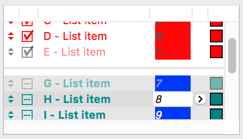
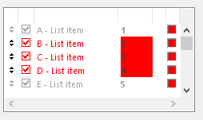

List Box
A list box control is a window that displays a list of items from which the user can choose one or more items. List box controls can be single-selection (allowing only one item to be selected at a time) or multiple-selection (allowing one or more items to be selected at a time).
A list box can have a horizontal and/or a vertical scrollbar. The scroll bars can be defined either in GRC or when the list box is created by DGAppendDialogItem. If no scroll bar is specified, a list box has a default vertical scrollbar (although there is a possibility to define a list box without scroll bars). If the list box is not large enough to display the whole content at once, the scroll bars become active, otherwise they are disabled. The user scrolls the list when necessary, however the position of the scroll box (thumb) can be changed not only by user action but from code also by the DGListSetScrollPosition, DGListScrollDown, DGListScrollUp and the DGListSetHScrollPosition functions. The user can select or deselect list items. Selecting a list box item changes its visual appearance, usually by changing the text and background colors to the colors specified by the operating system for selected items.
The list box can have an optional header. The header is displayed at the top of the list box. It is used to display information about the list box columns and can be configured to enable the user to dynamically adjust the sizes and the order of the list box columns.
-
 
Item type
- DG_ITM_LISTBOX
Subtypes
-
Subtype Meaning DG_LT_SINGLESELECT Only one selection is possible. DG_LT_MULTISELECT Multiple-selection is possible.
Flags
-
Value Meaning DG_LT_NOPARTIALITEMS The list box is resized to hide the last partially visible list item if this flag is set. DG_LT_NOSCROLL The list box has no scrollbars if this flag is set. DG_LT_VSCROLL The list box has vertical scrollbar if this flag is set. This flag cannot be combined with the DG_LT_NOSCROLL flag. DG_LT_HSCROLL The list box has horizontal scrollbar if this flag is set. This flag cannot be combined with the DG_LT_NOSCROLL flag. DG_LT_HEADER The list box has a header control above the list items.
GRC Specification
SingleSelList x y dx dy fontSpec partItems [scrollType] itemSize [headerFlag headerSize]
MultiSelList x y dx dy fontSpec partItems [scrollType] itemSize [headerFlag headerSize]
where x and y are the pixel coordinates of the upper left corner of the list box, dx and dy are the width and height of the control in pixels. fontSpec declares the font size and style of the list items. partItems is used to set the DG_LT_NOPARTIALITEMS flag. If the optional scrollType flag is not present, the list box has vertical scrollbar. itemSize is the height of list items in pixels. If the optional headerFlag is present, the header size also must be specified.
Possible values of fontSpec:
-
Value DG constant combination used in DGSetItemFont ExtraSmall DG_IS_EXTRASMALL SmallPlain DG_IS_SMALL | DG_IS_PLAIN SmallBold DG_IS_SMALL | DG_IS_BOLD SmallItalic DG_IS_SMALL | DG_IS_ITALIC SmallUnderline DG_IS_SMALL | DG_IS_UNDERLINE LargePlain DG_IS_LARGE | DG_IS_PLAIN LargeBold DG_IS_LARGE | DG_IS_BOLD LargeItalic DG_IS_LARGE | DG_IS_ITALIC LargeUnderline DG_IS_LARGE | DG_IS_UNDERLINE
Possible values of partItems:
-
Value Meaning PartialItems The DG_LT_NOPARTIALITEMS flag is not set. NoPartialItems The DG_LT_NOPARTIALITEMS flag is set.
Possible values of scrollType:
-
Value Meaning NoScroll The DG_LT_NOSCROLL flag is set. VScroll The DG_LT_VSCROLL flag is set. HScroll The DG_LT_HSCROLL flag is set. HVScroll The DG_LT_HSCROLL | DG_LT_VSCROLL flag combination is set.
Possible values of headerFlag:
-
Value Meaning HasHeader The DG_LT_HEADER flag is set.
Messages
-
Message Meaning DG_MSG_CLICK A list box item is clicked but the selection did not change. The message data parameter is a pointer to a DGListMsgData structure cast to DGMessageData. This structure contains information about the user action. DG_MSG_CHANGE If the message data parameter is zero, the selection is changed in the list box. If the message data has a non-zero value, this message signals that a list item is dragged to a new position. DG_MSG_DOUBLECLICK A list box item is double clicked. The message data parameter is a pointer to a DGListMsgData structure cast to DGMessageData. This structure contains information about the user action. DG_MSG_FOCUS The list box gains or loses the keyboard focus. The message data is 1 or zero, respectively. DG_MSG_UPDATE A tabulator field or list item of a list box should be redrawn. The message data parameter is a pointer to a DGListUpdateData structure cast to DGMessageData. This structure contains all the necessary information to update the tabulator field or list item by the application. DG_MSG_MOUSEMOVE The mouse is over a list box item. The message data parameter is a pointer to a DGListMsgData structure cast to DGMessageData. This structure contains information about the user action. DG_MSG_DRAGDROP Drag and drop related event occured. This message can come only after it is enabled with DGEnableMessage. List boxes can be both drag source and target. DG_MSG_LISTHEADERBUTTONCLICK The header button of the list box was clicked. The header button is displayed above the vertical scroll bar. DG_MSG_LISTHEADERCLICK An item of the list box header was clicked. The message data parameter is a pointer to a DGListHeaderMsgData structure cast to DGMessageData. This structure contains information about the index of the clicked header item. DG_MSG_LISTHEADERDRAG An item of the list box header was dragged to a new position. The message data parameter is a pointer to a DGListHeaderMsgData structure cast to DGMessageData. This structure contains information about the old and new index of the dragged header item. DG_MSG_LISTHEADERRESIZE The size of list box header item was changed by mouse interaction. The message data parameter is a pointer to a DGListHeaderMsgData structure cast to DGMessageData. This structure contains information about the index and grow value of the modified header item.
Modification Flag
The DGListSelectItem and DGListDeselectItem functions set the list box's modification flag except they are called when handling the DG_MSG_INIT message in the dialog callback function. The flag can also be set by user actions that change the selection in the list box and generate DG_MSG_CHANGE messages. Use DGModified or DGResetModified to retrieve or reset (clear) the state of the modification flag.
Remarks
A list box can contain normal and separator list items. Call DGListInsertItem and DGListInsertSeparator to insert normal and separator items into a list box and DGListDeleteItem to delete both type of items. The number of items currently in a list box can be retrieved by DGListGetItemCount.
Text style, status (enabled, grayed, disabled) and color of each list item can be changed separately by DGListSetItemStyle, DGListSetItemStatus and DGListSetItemColor. To retrieve these list item properties use DGListGetItemStyle, DGListGetItemStatus and DGListGetItemColor, respectively. Each list item can have a user-defined value that can be used to store any item specific user data. DGListSetItemUserData and DGListGetItemUserData give an access to this value.
The content of list items can be divided into more columns. In this documentation the notation "tabulator field" is used instead of "column". The reason for this is that texts of columns can be separated within a list item by inserting tabulator ('\t') characters into its text. Use DGListSetTabFieldCount and DGListSetTabFieldData to set the number of tabulator fields and their properties. When calculating the width of the field call DGListGetItemWidth to get the maximum possible end position of the rightmost tabulator field. The content can be justified and truncated within its tabulator field. The alignment and truncation properties can be retrieved by the DGListGetTabFieldData function. The content of a tabulator field can be set and retrieved by DGListSetTabItemText and DGListGetTabItemText, respectively. The color of each tabulator field can be set and retrieved separately by DGListSetTabItemColor and DGListGetTabItemColor.
There are two ways to set an icon of a tabulator field. One possibility is to specify the icon with its icon handle by DGListSetTabItemIcon, the other is to set it with its resource ID by DGListSetTabItemIconId or by DGListSetTabItemIconResource. The icon handle can be retrieved by DGListGetTabItemIcon, the icon ID and the resource module ID of the icon can be retrieved by DGListGetTabItemIconId and DGListGetTabItemIconResource, respectively.
Like texts, icons are also justified within their tabulator field. A tabulator field can contain one icon and some text together. In this case the DG_IS_CENTER justification is not allowed. The icon must be positioned at the beginning or the end of the text. If the icon is at the beginning of the tabulator field, the justification is automatically set to DG_IS_LEFT, and when the icon is in the end the justification is automatically set to DG_IS_RIGHT.
Tabulator fields can be drawn by DG or by the application. Use DGListSetTabFieldUpdateFlag to change the update flag of a tabulator field. After this flag is set to true, the dialog callback function receives a DG_MSG_UPDATE message whenever the tabulator field must be updated. The message data parameter is a pointer to a DGListUpdateData structure that contains all the necessary information to update the tabulator field by the application. The application should just draw the desired content; graying and highlighting are handled by DG after the dialog callback function returns.
Also list items can be drawn by DG or by the application. Use DGListSetItemOwnerDrawFlag to change the update flag of a list item. After this flag is set to true, the dialog callback function receives a DG_MSG_UPDATE message whenever the list item must be updated. The message data parameter is a pointer to a DGListUpdateData structure that contains all the necessary information to update the list item by the application. The application should just draw the desired content; graying and highlighting are handled by DG after the dialog callback function returns.
If a list box has a horizontal scrollbar, the size of the scrollbar always depends on the end-position and on the style of the last tabulator field. If tabulator fields were not previously defined by DGListSetTabFieldData, the size of the scrollbar equals to the longest list item. If the type of the last tabulator field is DG_IS_NOTRUNC and its update flag is false (see: DGListSetTabFieldUpdateFlag), the size of the scrollbar equals also to the longest list item. In all other cases the size of the scrollbar will equal to the end-position of the last tabulator field.
When more list items are inserted or deleted or more parameters of list items, i.e. text, color, style, status, etc., are modified simultaneously by calling list specific functions, it is advised to enclose these function calls by DGListDisableDraw and DGListEnableDraw to avoid unwanted screen updates. As DGListEnableDraw itself does not update the list, it is the application's responsibility to redraw the invalid areas. If almost the whole list becomes invalid, use DGInvalidateItem or DGRedrawItem to update the list. However, if only a few list items or tabulator fields must be repainted use DGListRedrawItem or DGListRedrawTabItem.
The pixel height of the list items can be set and retrieved by DGListSetItemHeight and DGListGetItemHeight, respectively. Use DGListGetItemRect to get the rectangle of a particular list item. This function is also suitable for testing whether a list item is visible or not. When a list box is resized, the last list item can often become partially visible. This behavior is usually unacceptable. To avoid this problem call DGListSetNoPartialItems after the list box is created and every time when it is resized.
A list box can be single-selection or multiple-selection. The user can select list items by the mouse or by keypresses through the usual ways. To select or deselect one or more list items from the program code call DGListSelectItem and DGListDeselectItem, respectively. Use DGListGetSelCount to retrieve the number of selected list items and DGListGetSelected or DGListGetSelItems to get their indices. A mouse click on the empty client area of a list box (where there is no list item) removes all the previous selections. In this case a DG_MSG_CHANGE message is sent to notify the application. Selection with keypresses is also supported. Searching can be done on any textual tabulator field (use DGListSetTabFieldToSearch to specify the tabulator field index). DG searches a list item not only by a single prefix character, you can type a word prefix, too.
List items in a single-selection list box can be reordered by clicking and tracking them with the mouse. In order to be able to do this first you should enable the DG_MSG_MOUSEMOVE message for the list box item by calling DGEnableMessage and set the image of one of the tabulator fields to DG_LIST_DRAGICON which is a small up-down arrow indicating that the list item is draggable. When handling DG_MSG_MOUSEMOVE and the cursor is above a list tabulator field which contains an icon with the ID DG_LIST_DRAGICON, the dialog callback function should return DG_LIST_INDRAGAREA to change the cursor to the list drag cursor (small up and down arrows). As the cursor becomes this drag cursor, the user can drag list items, i.e. change their order, by clicking and tracking the mouse. During dragging a thin dotted frame indicates the dragged item. List items can only be dragged between separator lines inserted by DGListInsertSeparator into the list box. If the positions of the item before and after the dragging are different, the dialog callback function receives a DG_MSG_CHANGE message with a non-zero message data. Use DGListGetOldDragPos and DGListGetNewDragPos macros to retrieve the old and new index of the dragged list item, respectively, from the message data.
The content of list item's tabulator field can be not only a text and/or icon, but an other dialog item, too. These dialog items that appear on a list box item are called ontab items. Ontab dialog items can be assigned to tabulator fields by DGListSetDialItemOnTabField.
The list box is one of the focusable controls of DG. When a list box gains or loses the keyboard focus as a result of user actions, the dialog callback function receives a DG_MSG_FOCUS message. The keyboard focus can be set to a list box from program code, too, by DGSetFocus. To retrieve the control that currently has the keyboard focus use DGGetFocus.
The keyboard focus and the focusable control categories in DG essentially have the same meaning as in the Macintosh operating system (i.e. the same type of controls are focusable in DG and on Macintosh). On Windows, however, more controls can have keyboard focus. Focusable controls of DG form a subset of focusable controls of Windows. The DGSetFocus and DGGetFocus functions work on focusable controls of DG only.
There are two ways to display the header in the list box. If the list box is created by GRC description then the header can be enabled in the GRC file. By dynamically created list box controls the header is specified with the parameters of DGAppendDialogItem. Once the header is created for a list box, its size and visibility could not be changed. The height of the header is retrieved by DGListGetHeaderHeight.
The header can be configured so that the number and size of the header items are either synchronized with the corresponding tabulator fields by DG or independently handled by the application. The header is configured by the DGListSetHeaderFlags and DGListSetHeaderItemCount functions.
The header items can display text and icon also, which can be set by the DGListSetHeaderItemText and DGListSetHeaderItemIcon functions. To set the font style and alignment of a header item the DGListSetHeaderItemFont and DGListSetHeaderItemFlags functions are used.
Only those header items can be resized on which the isSizeable flag is set by the DGListSetHeaderItemFlags function. Header items can be resized either by mouse interaction or by code with the DGListSetHeaderItemSize function. With mouse interaction the header item can not be shrinked smaller than the minimum size which is set by the DGListSetHeaderItemMinSize function.
It is possible to indicate the sorting order of a list box coloumn in a header item. Primary and secondary sorting order are shown with simple and double triangles, pointing up or downwards. To show or hide the sorting arrow the DGListSetHeaderItemArrowType function is used.
The first header item always starts at 0 position. The right side of the right marginal header item overlaps always with the right side of the last tabulator field. If there is space between two adjacent tabulator fields and the isSynchron flag is set on the list box header, the margins of the header items coincide with the middle of the spaces between the tabulator fields. If the list box has a horizontal scrollbar and a header item is being resized, all the items being to the right from this header item slips to the right or to the left and the width of the header item and the width of the list box rows are changing constantly. If the list box does not have a horizontal scrollbar, the size of the header always stays constant. In this case if the user wants to widen a header item then to the right from the chosen item another sizeable header item has to be found of which size does not gained its minimal size yet. The found header item will be narrowed. If there is no such header item, the resizing will be unsuccessful. At the same time if the user wants to narrow a header item, then to the right of the chosen item the first sizeable header item will be widened.
If the user changes the size of the header items by mouse interaction (this property can be set for the items one by one), the application is notified and it has the possibility to change the size of the tabulator fields corresponding to the size of the header items. If the isSynchron flag is set on the list box header and the application does not handle the DG_MSG_LISTHEADERRESIZE message (ie.: the application returns 0), the list box sets the size of the tabulator fields automatically. If the application handles this message, it should return 1. If the isSynchron flag is not set, then DG does not set the size of the tabulator fields.
If the user modifies the size of the tabulator fields (by code) and the isSynchron flag is set on the list box header - this is the default setting - the list box adjusts the size of the header items to the size of the tabulator fields. However if the isSynchron flag is not set, the application should resize the header items also.
If the user resizes the list box control and there is a horizontal scroll bar on the list box, the size of the tabulator fields and of the header items will not change automatically. If the list box control is resized and there is no horizontal scroll bar on the list box, the application should readjust the size of the tabulator fields. In this case if the isSynchron flag is set on the list box header, the list box resizes the header items, otherwise the header items should be resized by the application also.
The detailed help information of the item can be invoked by setting the keyboard focus to a focusable dialog item then pressing the [F1] key on Windows or [Help] key on Macintosh; or by clicking the right mouse button on the item; or by clicking the help [?] button in the dialog caption then clicking on the item itself. If tooltips are enabled, the short help information is displayed as usual. There are two ways to display help text for a list box. Help text can be displayed for each item of the list box or only one help text can be displayed for the list box. The help style of the list box can be set and retrieved by the DGListSetHelpStyle and DGListGetHelpStyle functions, respectively.
Requirements
- Version: DG 18.0.0 or later
- Header: DG.h
See Also
Dialog item types, List specific functions
DGAppendDialogItem, DGGetFocus, DGInvalidateItem, DGModified, DGRedrawItem, DGResetModified, DGSetFocus, DGSetItemFont, Callback functions
DG_MSG_CLICK, DG_MSG_CHANGE, DG_MSG_DOUBLECLICK, DG_MSG_FOCUS, DG_MSG_INIT, DG_MSG_UPDATE, DG_MSG_MOUSEMOVE
DG_MSG_LISTHEADERCLICK, DG_MSG_LISTHEADERDRAG, DG_MSG_LISTHEADERRESIZE
DG_MSG_LISTHEADERBUTTONCLICK, DGListMsgData, DGListUpdateData, DGListHeaderMsgData